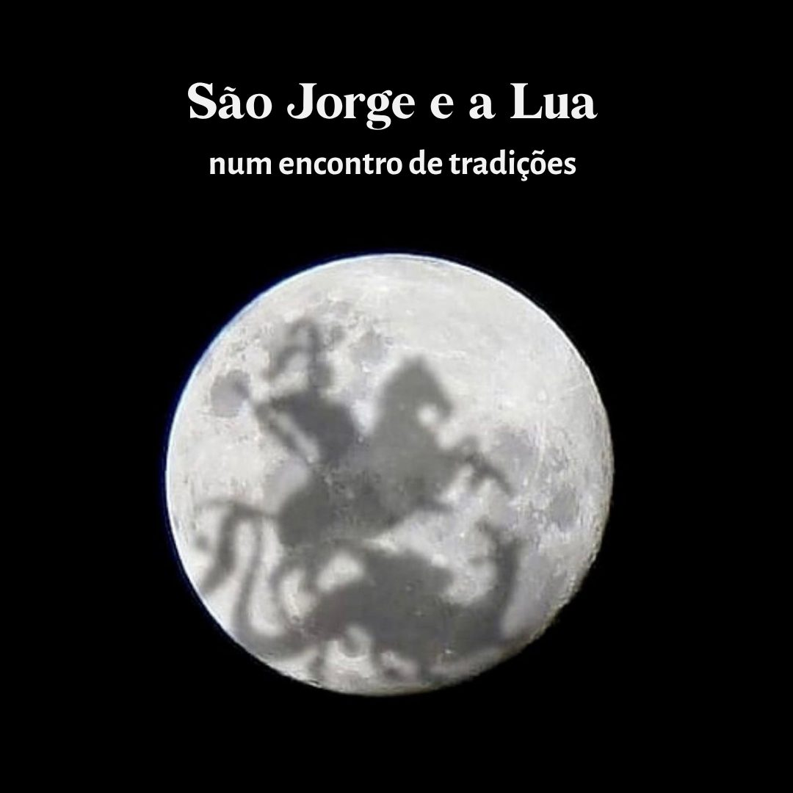

O Guerreiro, o Orixá e a Lua: Encontros em 23 de abril

Celebrar 23 de abril no Brasil exige ir além da história oficial da igreja. O que chamamos de sincretismo entre São Jorge e Ogum não é uma simples mistura, mas uma estratégia de resistência cultural. Como analisa Bastide (1971), essa foi a ferramenta que permitiu que povos escravizados preservassem suas cosmologias sob a estrutura dos santos católicos, garantindo a sobrevivência de saberes africanos diante da repressão colonial.
Jorge, o soldado da Capadócia, e Ogum, o senhor do ferro, compartilham a imagem do guerreiro que abre caminhos. Segundo Verger (2018), essa união acontece porque os dois representam a força que organiza a vida e encara o que vier pela frente.
No Rio de Janeiro, essa relação ganha uma dimensão humana fundamental. Como explica Luiz Antonio Simas (2026) na sua entrevista ao portal ICL Notícias, Jorge não é apenas a santificação do homem, mas a "humanização do santo" que desce dos altares para morar no subúrbio e enfrentar os perrengues do cotidiano junto com a gente.
A Lua completa a tríade. No imaginário popular, as manchas lunares são o cavaleiro em vigília, uma crença que Cascudo (2001) documenta como base da nossa identidade. Sob o olhar da astrologia, a Lua rege, entre outras coisas, nossas reações emocionais e nosso senso de proteção. Quando ela se une ao ferro de Jorge e Ogum, é o que dá coragem pra gente se manter de pé e proteger nosso chão, nos permitindo encarar os próprios dragões, como narram os mitos registrados por Prandi (2001).
São Jorge me remete à infância e adolescência, quando eu acompanhava as procissões em Quintino. Também me recordo da minha mãe, que me fazia ir com ela quase todos os dias na igreja dele para rezar. Se eu tivesse um santo de devoção, com certeza seria São Jorge.
BASTIDE, Roger. As religiões africanas no Brasil: sociologia das interpenetrações de civilizações. São Paulo: Pioneira, 1971.
CASCUDO, Luís da Câmara. Dicionário do folclore brasileiro. 10. ed. São Paulo: Global, 2001.
PRANDI, Reginaldo. Mitologia dos orixás. São Paulo: Companhia das Letras, 2001.
SIMAS, Luiz Antonio. Luiz Antonio Simas sobre São Jorge: “Não é santificação do homem, é humanização do santo”. ICL Notícias, 23 abr. 2024. Disponível em: https://iclnoticias.com.br/luiz-antonio-simas-sobre-sao-jorge-nao-e-santificacao-do-homem-e-humanizacao-do-santo. Acesso em: 23 abr. 2026.
VERGER, Pierre Fatumbi. Orixás: deuses iorubás na África e no Novo Mundo. Salvador: Fundação Pierre Verger, 2018.